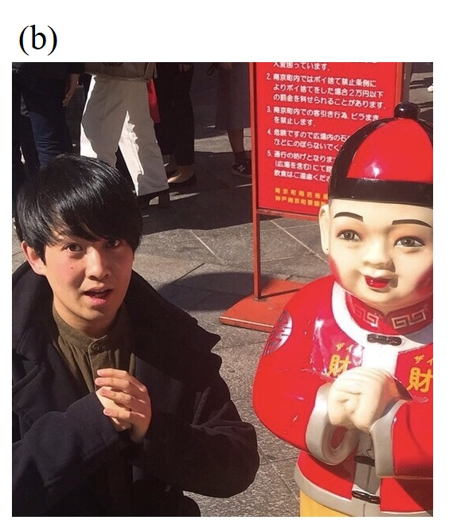
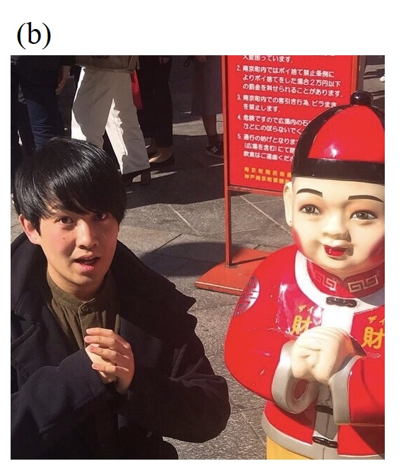

Profile
 


- 名前
-
堀文哉（ほりふみや）
- 身分
-
固体量子物性研究室 修士2回生
- 生年月日
-
1998年1月28日（星野源と同じ誕生日）
- 名前
-
大分県竹田市 （大分県の南西部にあり, 熊本県と宮崎県に隣接する市です。 瀧廉太郎作曲の「荒城の月」のモデルである岡城の城下町でもあります。 くじゅう連山・阿蘇外輪山・祖母山系の1 kmを越える山々に囲まれており, 豊かな自然や雄大な景色, たくさんの温泉がある場所で育ちました。）
- 趣味・特技
-
音楽, 歌うこと（色んなジャンルの曲を聴いたり歌ったりします）が好きです。アカペラ編曲や作曲も暇つぶしにしています。 好きなアーティストはONE OK ROCK（好きすぎて, CD音源はもちろん, ライブ音源を聞いただけで何年の, どこの, どのライブの, どのアルバム・シングルの, どの曲なのかをあてることができます）。 ラーメンは大好物です。スポーツは卓球が得意です。 あと特技は, 体を動かしたりダンスをしたりしながらでも, 何度もマイクを右手から左手に持ち替えたり戻したりして歌を歌い続けることです。 （歌っているときの堀を見たらわかります。歌一曲の間で何十回も無意識にマイクを持ち替えます。マイクは両利きですが, それ以外に関しては右利きです。）
- 略歴
-
1998年1月28日
大分県竹田市に生まれる。2004年4月~2010年3月 竹田市立南部小学校
2007年（当時, 小学校4年生）のドラマ「ガリレオ」の影響で理科が好きだった。
習い事は, 習字, バレーボール, 卓球。2010年4月~2013年3月 竹田市立竹田南部中学校
卓球部に所属して地区大会で何度か優勝していた。顧問によく怒られていた。2013年4月~2016年3月 大分県立竹田高校学校
2013年（当時, 高校1年生）のドラマ「ガリレオ（第2シリーズ）」の影響で物理学を志す。
帰宅部の予定だったが, 当時の顧問の勧誘で高校でも卓球部に入部。高校2年生からはキャプテンも務めた。
このころから日本のロックバンドONE OK ROCKにハマって, 音楽が好きになる。2016年4月 広島大学理学部物理科学科入学
音楽がやりたくて広島大学アカペラサークルPlaza de Españaに入団。アカペラづくしの4年間を過ごす。2020年3月 広島大学理学部物理科学科卒業
広島大学磁性物理学研究室に所属し, 低温で反強四極子秩序を示すPrV2Al10におけるLa希釈系の研究を行った。2020年4月 京都大学大学院理学研究科入学
- 職歴
-
2020年12月~2021年3月 京都大学理学研究科 オフィス・アシスタント
2020年4月~2021年9月 京都大学理学研究科 オフィス・アシスタント
- 受賞歴
-
2017年4月 理学部成績優秀者認定証
2019年4月 理学部成績優秀者認定証
- 連絡先
-
住所
〒606-8502 京都市左京区北白川追分町 理学部5号館134
京都大学理学研究科物理学第一教室 固体量子物性研究室電話番号
075-753-3744メールアドレス
hori.fumiya.36s"at"st.kyoto-u.ac.jp ("at"を@に変更してください)